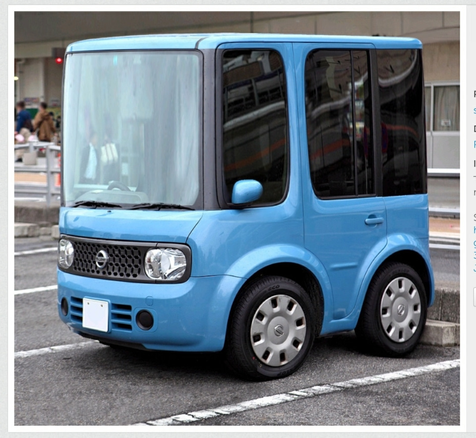

Для чего они нужны и как они нам помогают?
Для чего они нужны:
- Передвижение. В личном транспортном средстве передвигаться по городу намного удобнее, чем в общественном транспорте. Кроме того, в любой момент можно отправиться в путешествие.
- Перевозка пассажиров и грузов. Существуют легковые, грузовые автомобили, автобусы.
- Специальные задачи. Существуют автомобили служб спасения, пожарные, полицейские, скорая медицинская помощь, аварийная газовая служба, автомобили для уборки улиц и другие.
Машины помогают людям в разных сферах жизни:
- Транспорт. Помогает быстро добраться до места назначения.
- Перевозка грузов. 13 Грузовые машины доставляют товары из одного места в другое, например продукты, мебель и другие необходимые вещи.
-Экстренная помощь. Машины скорой помощи приезжают на вызов к больному человеку, а пожарные машины тушат огонь.
2 СТРАНИЦА